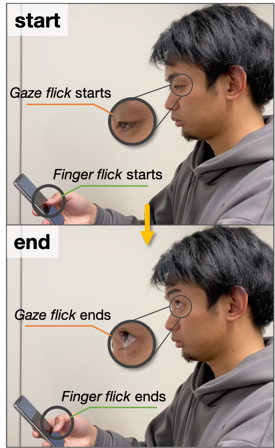

Affiliation (~ March 2021)
Biography
Toho High School
[2012.4 - 2015.3]
College of Information Science, Science and Technology, School
of Informatics, University of Tsukuba
[2015.4 - 2019.3]
Graduate School of Systems and Information Engineering,
Department of Computer Science, University of Tsukuba
[2019.4 - 2021.3]
Publication
Refereed Conference Papers
conference
2019 IEEE International Conference on Pervasive Computing and
Communications Workshops (PerCom Workshops). Kyoto. March,
2019.
Suzuki, Y., Sekimori, K., Shizuki, B., & Takahashi, S.
(2019, March). Touch sensing on the forearm using the
electrical impedance method. In 2019 IEEE International
Conference on Pervasive Computing and Communications
Workshops (PerCom Workshops) (pp. 255-260). IEEE.
 A Mouth Gesture Interface Featuring a Mutual-Capacitance
Sensor Embedded in a Surgical Mask
A Mouth Gesture Interface Featuring a Mutual-Capacitance
Sensor Embedded in a Surgical Mask
conference
Proceedings of 22nd International Conference on Human-Computer
Interaction (HCI International 2020), Springer. Multimodal and
Natural Interaction.
Suzuki, Y., Sekimori, K., Yamato, Y., Yamasaki, Y., Shizuki,
B., & Takahashi, S. (2020, July). A Mouth Gesture Interface
Featuring a Mutual-Capacitance Sensor Embedded in a Surgical
Mask. In International Conference on Human-Computer
Interaction (pp. 154-165). Springer, Cham.
Hand Gesture Interaction with a Low-Resolution Infrared
Image Sensor on an Inner Wrist
conference
Proceedings of the 2020 International Conference on Advanced
Visual Interfaces (AVI '20) Association for Computing
Machinery, New York, NY, USA.
Yamato, Y., Suzuki, Y., Sekimori, K., Shizuki, B., &
Takahashi, S. (2020, September). Hand Gesture Interaction
with a Low-Resolution Infrared Image Sensor on an Inner
Wrist. In Proceedings of the International Conference on
Advanced Visual Interfaces (pp. 1-5).
Dissertation
Bachelor thesis
鈴木雄太郎.
電気インピーダンス法を用いた前腕におけるタッチ位置および手形状の識別.
筑波大学, 2018, 卒業論文.
Master thesis
鈴木雄太郎.
フリックと視線移動の組み合わせによるスマートフォンの操作拡張.
筑波大学, 2020, 修士論文.
Researches
Identification of touch position on forearm using the
EIM

This study aims to identify the touch position on the
forearm using the electrical impedance method. The proposed
method enables users to input data to a smartwatch by
touching their forearm. As a prototype, we developed an
electronic circuit for measuring the electrical impedance
using electrodes and a microcontroller for a biological
surface, and identification software using SVM in Python.
A Hands-Free Input Method Using a Mask-Type Interface Based
on Mouth Movements

In this study, we propose a new input method using a
mask-type interface for mobile terminals in situations where
hand or voice input is difficult, such as in a crowded
train. This method can be used in public places because it
does not require hand or voice input. By using conductive
yarn as the sensor, it can be realized as an inexpensive
disposable mask. In this study, we implemented a mask-type
interface by attaching capacitive sensors to the mask.
Smartphone operation combined with flicking and eye
movement

We propose a new input method for smartphones that combines
flicking and eye movement. In this study, we propose a new
input method for smartphones that combines flicking and eye
movement. We propose a new input method for smartphones
using a combination of flicking and eye movement, which
allows the user to perform operations such as pinch-in as an
alternative to multi-touch gestures even when operating with
one hand. In addition, it is possible to perform operations
such as using physical buttons and bezels without changing
the grasping posture. To achieve this, we implemented a gaze
estimation system using a smart phone and investigated its
performance.